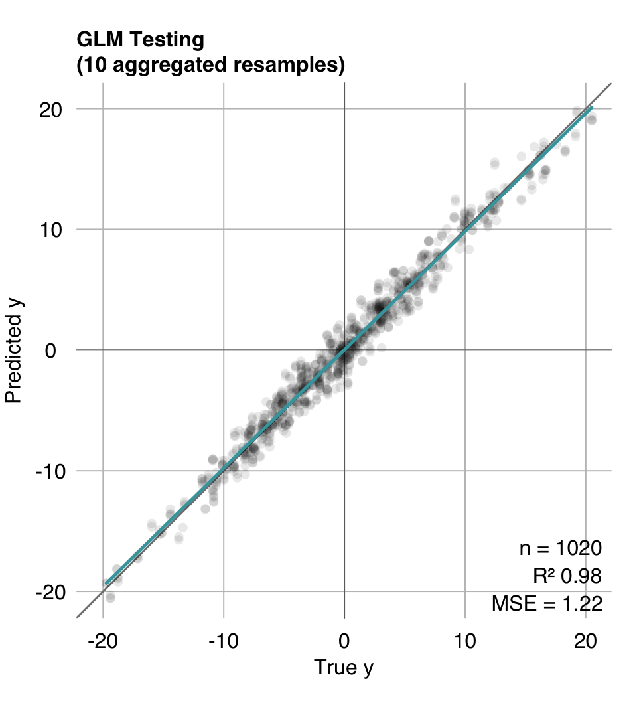
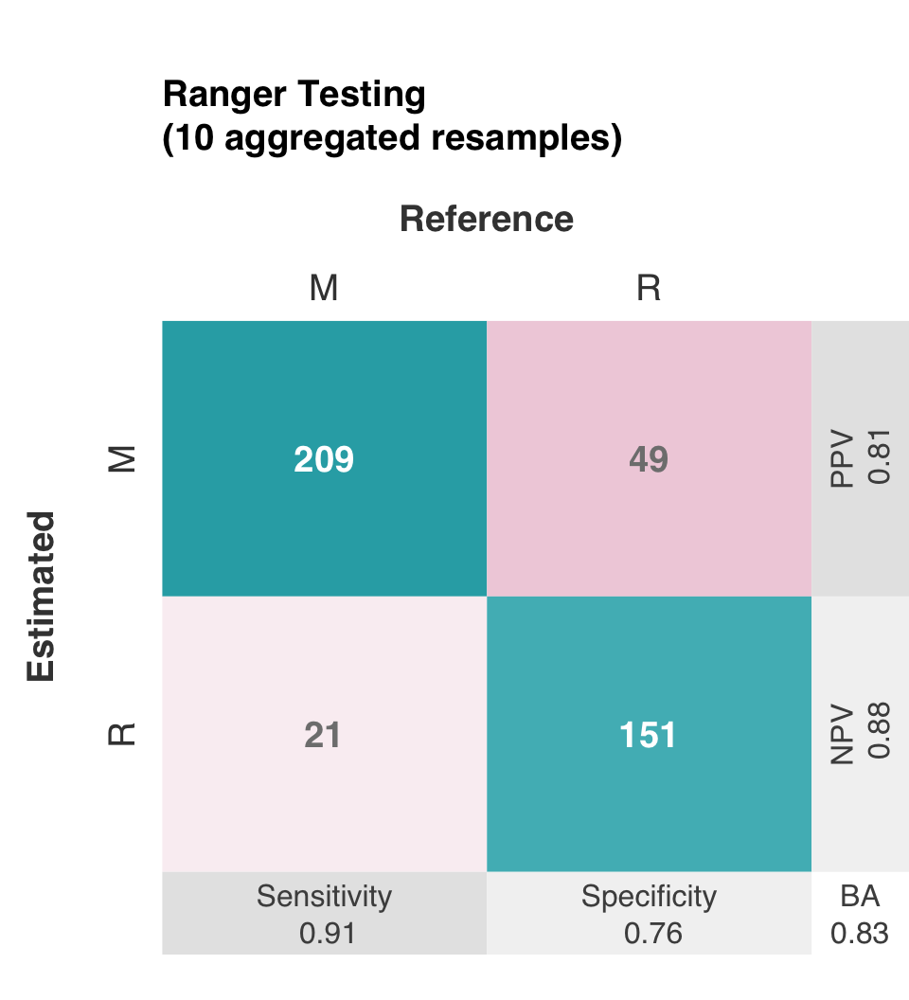
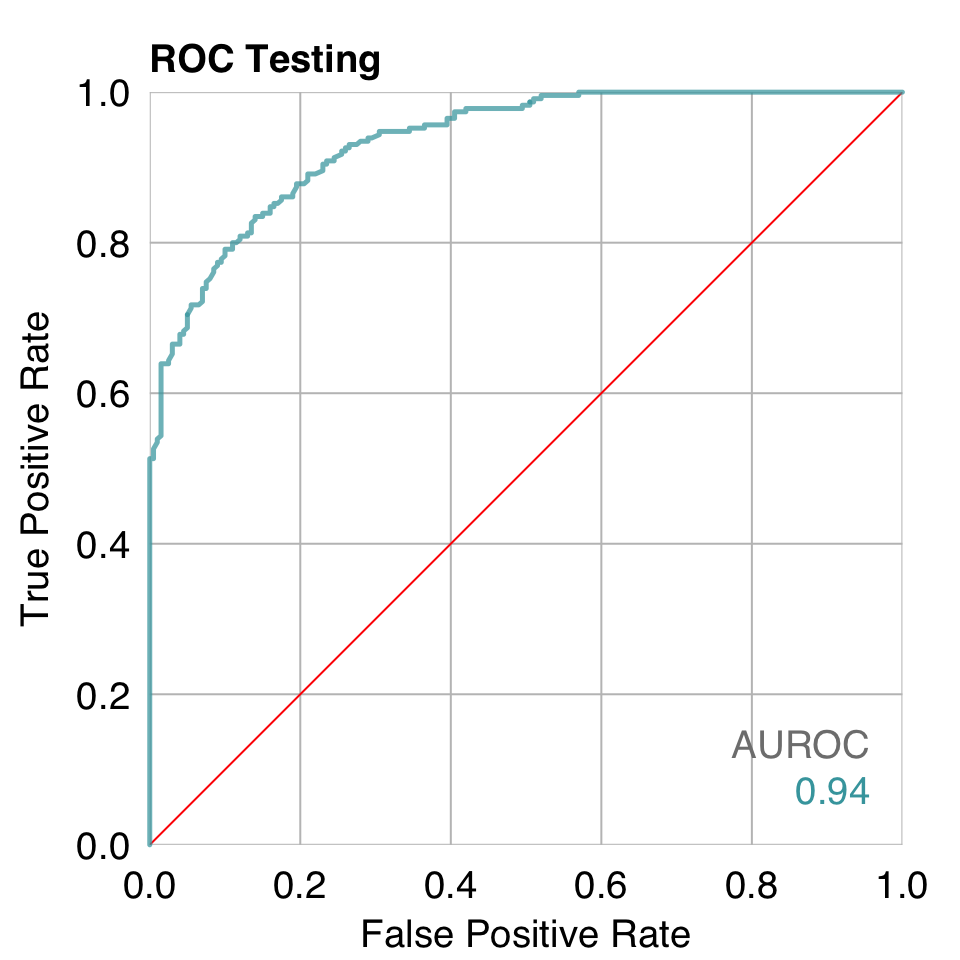
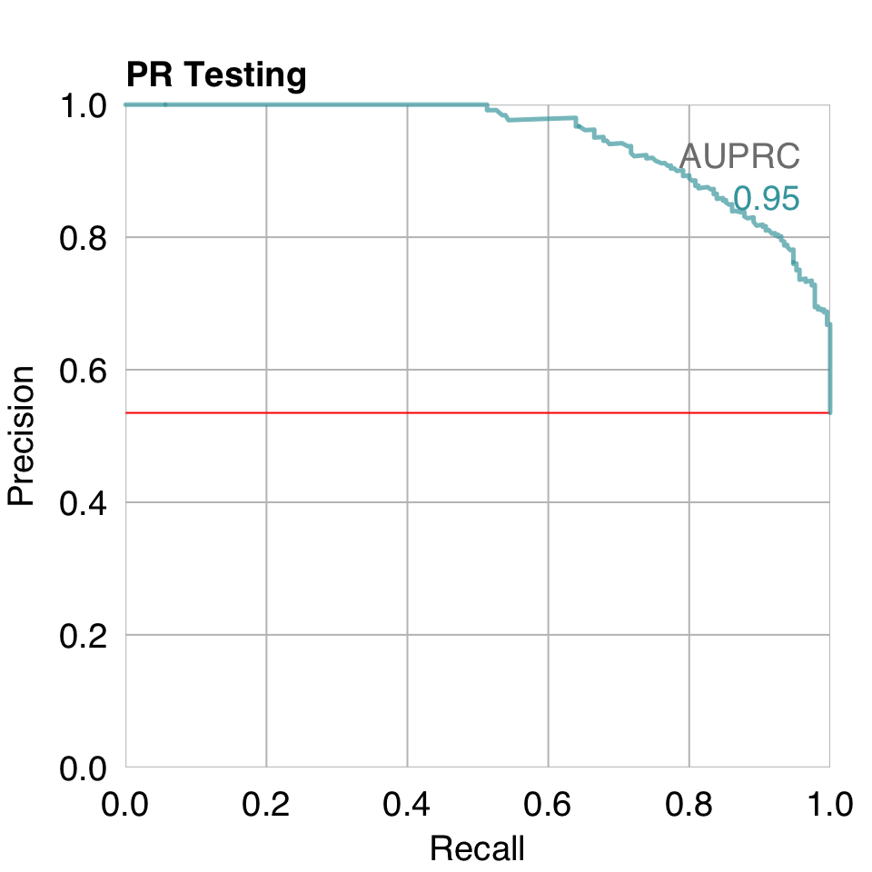
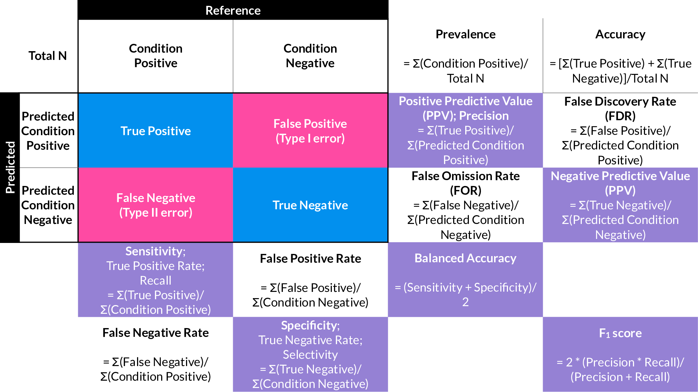
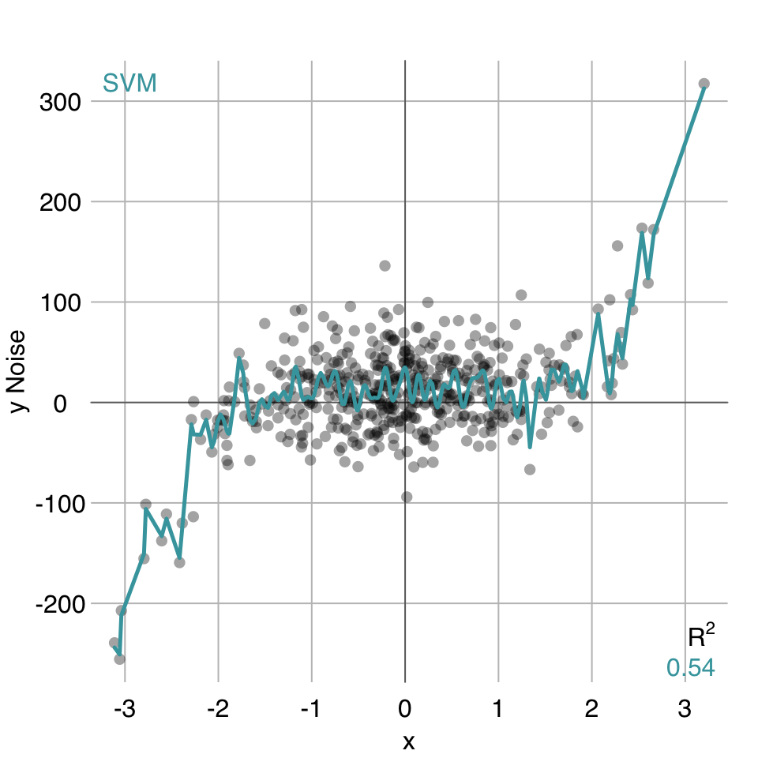
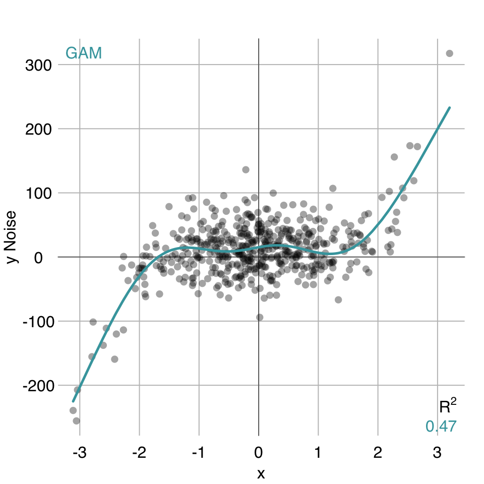

49 Supervised Learning
This is a very brief introduction to machine learning using the rtemis package. rtemis includes functions for:
- Visualization: static & interactive plots
- Data preprocessing
- Unsupervised learning: clustering & dimensionality reduction
- Supervised learning: regression & classification
49.1 Installation
install the remotes package, if you don’t have it:
install.packages("remotes")Install rtemis:
remotes::install_github("egenn/rtemis")rtemis uses a large number of packages under the hood. Since you would not need to use all of them, they are not installed by default. Each time an rtemis function is called, a dependency check is run and a message is printed if any packages need to be installed.
For this short tutorial, start by installing ranger, if it is not already installed:
install.packages("ranger")Load rtemis:
49.2 Data Input for Supervised Learning
All rtemis supervised learning functions begin with s. (“supervised”).
They accept the same first four arguments:x, y, x.test, y.test
but are flexible and allow you to also provide combined (x, y) and (x.test, y.test) data frames, as explained below.
49.2.1 Scenario 1 (x.train, y.train, x.test, y.test)
In the most straightforward case, provide each featureset and outcome individually:
-
x: Training set features -
y: Training set outcome -
x.test: Testing set features (Optional) -
y.test: Testing set outcome (Optional)
x <- rnormmat(nrow = 200, ncol = 10, seed = 2019)
w <- rnorm(10)
y <- x %*% w + rnorm(200)
res <- resample(y, seed = 2020)[90m.:[0m[1mResampling Parameters[22m
[1m n.resamples[22m: 10
[1m resampler[22m: strat.sub
[1m stratify.var[22m: y
[1m train.p[22m: 0.75
[1m strat.n.bins[22m: 4
[90m09-28-23 21:16:40[90m [0m[0mCreated 10 stratified subsamples[90m [resample]
[0mx.train <- x[res$Subsample_1, ]
x.test <- x[-res$Subsample_1, ]
y.train <- y[res$Subsample_1]
y.test <- y[-res$Subsample_1]mod_glm <- s_GLM(x.train, y.train, x.test, y.test)09-26-23 23:14:36 Hello, egenn [s_GLM]
.:Regression Input Summary
Training features: 147 x 10
Training outcome: 147 x 1
Testing features: 53 x 10
Testing outcome: 53 x 1
09-26-23 23:14:37 Training GLM... [s_GLM]
.:GLM Regression Training Summary
MSE = 0.84 (91.88%)
RMSE = 0.92 (71.51%)
MAE = 0.75 (69.80%)
r = 0.96 (p = 5.9e-81)
R sq = 0.92
.:GLM Regression Testing Summary
MSE = 1.22 (89.03%)
RMSE = 1.10 (66.88%)
MAE = 0.90 (66.66%)
r = 0.94 (p = 2.5e-26)
R sq = 0.89
09-26-23 23:14:37 Completed in 0.01 minutes (Real: 0.44; User: 0.42; System: 0.02) [s_GLM]
49.2.2 Scenario 2: (x.train, x.test)
You can provide training and testing sets as a single data.frame each, where the last column is the outcome. Now x is the full training data and y the full testing data:
-
x: data.frame(x.train, y.train) -
y: data.frame(x.test, y.test)
x <- rnormmat(nrow = 200, ncol = 10, seed = 2019)
w <- rnorm(10)
y <- x %*% w + rnorm(200)
dat <- data.frame(x, y)
res <- resample(dat, seed = 2020)[90m09-28-23 21:16:40[90m [0m[0mInput contains more than one columns; will stratify on last[90m [resample]
[0m[90m.:[0m[1mResampling Parameters[22m
[1m n.resamples[22m: 10
[1m resampler[22m: strat.sub
[1m stratify.var[22m: y
[1m train.p[22m: 0.75
[1m strat.n.bins[22m: 4
[90m09-28-23 21:16:40[90m [0m[0mCreated 10 stratified subsamples[90m [resample]
[0mdat_train <- dat[res$Subsample_1, ]
dat_test <- dat[-res$Subsample_1, ]mod_glm <- s_GLM(dat_train, dat_test)09-26-23 23:14:37 Hello, egenn [s_GLM]
.:Regression Input Summary
Training features: 147 x 10
Training outcome: 147 x 1
Testing features: 53 x 10
Testing outcome: 53 x 1
09-26-23 23:14:37 Training GLM... [s_GLM]
.:GLM Regression Training Summary
MSE = 0.84 (91.88%)
RMSE = 0.92 (71.51%)
MAE = 0.75 (69.80%)
r = 0.96 (p = 5.9e-81)
R sq = 0.92
.:GLM Regression Testing Summary
MSE = 1.22 (89.03%)
RMSE = 1.10 (66.88%)
MAE = 0.90 (66.66%)
r = 0.94 (p = 2.5e-26)
R sq = 0.89
09-26-23 23:14:37 Completed in 1.3e-04 minutes (Real: 0.01; User: 0.01; System: 1e-03) [s_GLM]
The dataPrepare() function will check data dimensions and determine whether data was input as separate feature and outcome sets or combined and ensure the correct number of cases and features was provided.
In either scenario, Regression will be performed if the outcome is numeric and Classification if the outcome is a factor.
49.3 Regression
49.3.1 Check Data with check_data()
x <- rnormmat(nrow = 500, ncol = 50, seed = 2019)
w <- rnorm(50)
y <- x %*% w + rnorm(500)
dat <- data.frame(x, y)
res <- resample(dat)[90m09-28-23 21:16:40[90m [0m[0mInput contains more than one columns; will stratify on last[90m [resample]
[0m[90m.:[0m[1mResampling Parameters[22m
[1m n.resamples[22m: 10
[1m resampler[22m: strat.sub
[1m stratify.var[22m: y
[1m train.p[22m: 0.75
[1m strat.n.bins[22m: 4
[90m09-28-23 21:16:40[90m [0m[0mCreated 10 stratified subsamples[90m [resample]
[0mdat_train <- dat[res$Subsample_1, ]
dat_test <- dat[-res$Subsample_1, ]check_data(x) x: A data.table with 500 rows and 50 columns
Data types
* 50 numeric features
* 0 integer features
* 0 factors
* 0 character features
* 0 date features
Issues
* 0 constant features
* 0 duplicate cases
* 0 missing values
Recommendations
* Everything looks good
49.3.2 Single Model
mod <- s_GLM(dat_train, dat_test)09-26-23 23:14:37 Hello, egenn [s_GLM]
.:Regression Input Summary
Training features: 374 x 50
Training outcome: 374 x 1
Testing features: 126 x 50
Testing outcome: 126 x 1
09-26-23 23:14:37 Training GLM... [s_GLM]
.:GLM Regression Training Summary
MSE = 1.02 (97.81%)
RMSE = 1.01 (85.18%)
MAE = 0.81 (84.62%)
r = 0.99 (p = 1.3e-310)
R sq = 0.98
.:GLM Regression Testing Summary
MSE = 0.98 (97.85%)
RMSE = 0.99 (85.35%)
MAE = 0.76 (85.57%)
r = 0.99 (p = 2.7e-105)
R sq = 0.98
09-26-23 23:14:37 Completed in 2.3e-04 minutes (Real: 0.01; User: 0.01; System: 2e-03) [s_GLM]
49.3.3 Crossvalidated Model
mod <- train(dat, alg = "glm")09-26-23 23:14:37 Hello, egenn [train]
.:Regression Input Summary
Training features: 500 x 50
Training outcome: 500 x 1
09-26-23 23:14:37 Training Generalized Linear Model on 10 stratified subsamples... [train]
09-26-23 23:14:37 Outer resampling plan set to sequential [resLearn]
.:train GLM
Mean MSE of 10 stratified subsamples: 1.22
Mean MSE reduction: 97.50%
09-26-23 23:14:37 Completed in 4.2e-03 minutes (Real: 0.25; User: 0.23; System: 0.02) [train]
Use the describe() function to get a summary in (plain) English:
mod$describe()Regression was performed using Generalized Linear Model. Model generalizability was assessed using 10 stratified subsamples. The mean R-squared across all testing set resamples was 0.97.mod$plot()
49.4 Classification
49.4.1 Check Data
data(Sonar, package = "mlbench")
check_data(Sonar) Sonar: A data.table with 208 rows and 61 columns
Data types
* 60 numeric features
* 0 integer features
* 1 factor, which is not ordered
* 0 character features
* 0 date features
Issues
* 0 constant features
* 0 duplicate cases
* 0 missing values
Recommendations
* Everything looks good
res <- resample(Sonar)09-26-23 23:14:38 Input contains more than one columns; will stratify on last [resample]
.:Resampling Parameters
n.resamples: 10
resampler: strat.sub
stratify.var: y
train.p: 0.75
strat.n.bins: 4
09-26-23 23:14:38 Using max n bins possible = 2 [strat.sub]
09-26-23 23:14:38 Created 10 stratified subsamples [resample]
sonar_train <- Sonar[res$Subsample_1, ]
sonar_test <- Sonar[-res$Subsample_1, ]49.4.2 Single model
mod <- s_Ranger(sonar_train, sonar_test)09-26-23 23:14:38 Hello, egenn [s_Ranger]
09-26-23 23:14:38 Imbalanced classes: using Inverse Frequency Weighting [dataPrepare]
.:Classification Input Summary
Training features: 155 x 60
Training outcome: 155 x 1
Testing features: 53 x 60
Testing outcome: 53 x 1
.:Parameters
n.trees: 1000
mtry: NULL
09-26-23 23:14:38 Training Random Forest (ranger) Classification with 1000 trees... [s_Ranger]
.:Ranger Classification Training Summary
Reference
Estimated M R
M 83 0
R 0 72
Overall
Sensitivity 1
Specificity 1
Balanced Accuracy 1
PPV 1
NPV 1
F1 1
Accuracy 1
AUC 1
Positive Class: M
.:Ranger Classification Testing Summary
Reference
Estimated M R
M 25 11
R 3 14
Overall
Sensitivity 0.8929
Specificity 0.5600
Balanced Accuracy 0.7264
PPV 0.6944
NPV 0.8235
F1 0.7812
Accuracy 0.7358
AUC 0.8643
Positive Class: M
09-26-23 23:14:38 Completed in 2.3e-03 minutes (Real: 0.14; User: 0.21; System: 0.03) [s_Ranger]
49.4.3 Crossvalidated Model
mod <- train(Sonar)09-26-23 23:14:38 Hello, egenn [train]
.:Classification Input Summary
Training features: 208 x 60
Training outcome: 208 x 1
09-26-23 23:14:38 Training Ranger Random Forest on 10 stratified subsamples... [train]
09-26-23 23:14:38 Outer resampling plan set to sequential [resLearn]
.:train Ranger
Mean Balanced Accuracy of 10 stratified subsamples: 0.83
09-26-23 23:14:39 Completed in 0.02 minutes (Real: 1.15; User: 2.06; System: 0.34) [train]
mod$describe()Classification was performed using Ranger Random Forest. Model generalizability was assessed using 10 stratified subsamples. The mean Balanced Accuracy across all testing set resamples was 0.83.mod$plot()
mod$plotROC()
mod$plotPR()
49.4.4 Evaluation of a binary classifier

49.5 Understanding Overfitting
Overfitting occurs when a model fits noise in the outcome. To make this clear, consider the following example:
Assume a random variable x:
and a data-generating function fn():
fn <- function(x) 12 + x^5The true y is therefore equal to fn(x):
y_true <- fn(x)However, assume y is recorded with some noise, in this case gaussian:
We plot:
We want to find a model that best approximates y_true, but we only know y_noise.
A maximally overfitted model would model noise perfectly:
An example of an SVM set up to overfit heavily:

An example of a good approximation of fn using a GAM with penalized splines:
mplot3_xy(x, y_noise, fit = "gam")
49.6 rtemis Documentation
For more information on using rtemis, see the rtemis online documentation and vignettes